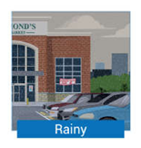
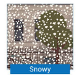
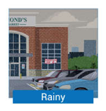
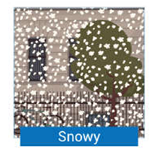

Tópico 4: Condições climáticas, Present Simple e Present Continuous; Esportes e Lazer; Gostos e Preferências; Habilidades; Adverbs of Manner; Partes da casa e mobiliário, Verbos modais can e may; Possessive Pronouns
1.1 What’s the weather like there?
Rosa já se acostumou com a vida em Chicago, assim como com as necessidades e obrigações da vida acadêmica, mas ainda está tentando se adaptar ao clima da cidade, muito diferente do Rio de Janeiro, seu local de origem no Brasil. Acompanhe a conversa das garotas:
Rosa: It's very cold outside. Do you know what the temperature is?
Christiane: I think it's about 28 degrees.
Rosa: What? It's too cold to be that hot.
Christiane: It's Fahrenheit, not Celsius.
Rosa: Oh, it must be below zero, it's so cold.
Carly: Pretty soon winter will be upon us.
Rosa: Are you saying that it will get worse?
Christine: Oh yes, you havent seen the snow, Whats's the weather like in Brazil?
Rosa: It almost never snows in Brazil. It's very hot and humid most of the time.
Carly: Lucky you. I don't like it when it snows... Nothing to do, all that mud...
Rosa: But there's Christimas!
Christine: Yeah, yeah. That too.
No diálogo entre as três amigas, elas trocam algumas informações sobre o clima no Brasil e EUA. A seguir, você verá como responder a pergunta What’s the weather like in...? (Como é o clima em...?), utilizada por Christine ao longo do diálogo que você acabou de acompanhar.
1.2 Talking about the weather
Quando alguém pergunta What’s the weather like in... ?, lembre-se que a resposta sempre inicia com it.
Conforme visto, os advérbios often, usually, sometimes e occasionally vêm logo após o verbo To be. Observe:
It in the winter
Já para os outros verbos, o advérbio vem antes. Por exemplo:
It is often rains in the winter.
A mesma estrutura pode ser usada quando se quer saber What’s the weather like today? Nesse caso, as respostas mudam um pouco, já que nem todas são adequadas à situação:
It’s raining a lot.
There’s a lot of rain.
There’s some rain.
There’s a bit of rain.
Outra forma de perguntar sobre o tempo é utilizar a pergunta What’s the temperature outside?, já que muitas vezes estamos em um ambiente climatizado e a temperatura externa é completamente diferente.
A resposta, como nos exemplos anteriores, começa com It's e pode ser dita utilizando Celsius ou Fahrenheit:
It's 20 degrees Celsius.
It's 68 degrees Fahrenheit.
Como você viu no conteúdo apresentado neste tópico, você precisa de alguns adjectives, verbs e nouns para falar sobre o clima. Veja o próximo tópico.
1.3 Weather
Começando pelos adjectives empregados para descrever o clima, veja a seguir os mais comuns:
 



Outros exemplos de palavras que ajudam a descrever o clima são:
| hot | warm | windy | wet / humid |
|---|---|---|---|
| sultry | icy | stormy | breezy |
| cool | cold | frosty | freezing |
| foggy | dry | sweltering | drizzle |
Lembre-se que esses adjetivos sempre são utilizados com It's..., por exemplo
It's windy
It's sultry
Acompanhe a seguir alguns verbs relacionados ao clima utilizados com mais frequência:
| Verb | Sentence |
|---|---|
| To shine | The sun is shining |
| To drizzle | It’s drizzling |
| To rain | It’s raining |
| To pour (rain) | It’s pouring (rain) |
| To thunder | It’s thundering |
| To hail | It’s hailing |
| To snow | It’s snowing |
| To blow | The wind is blowing |
Esses verbos são utilizados, principalmente, em dois tempos verbais: o Present Simple e o Present Continuous. O uso de um ou outro irá depender do que você deseja dizer:
It snows in winter.
It's snowing here.
Muitos dos verbos que você acabou de estudar vêm do substantivo que identifica o fenômeno a que o verbo se relaciona. Veja a seguir uma série de outras palavras igualmente importantes que fazem parte do vocabulário referente ao clima. Observe:
| temperature | degrees |
| sun | sunshine |
| cloud | drizzle |
| rain | storm |
| hurricane | thunder |
| lightning | fog |
| hail | snow |
| slush | frost |
| sleet | breeze |
| wind | tornado |
| twister | cold |
| heat | drought |
| flood | weather forecast |
| weatherman | weatherwoman |
| meteorology | meteorologist |
Com os nouns a estrutura utilizada é There is/are..., como, por exemplo:
There's slush in the streets.
No entanto, com heat e cold a construção da frase é diferente. Você diz:
The heat is terrible today.
I don’t like the cold in the winter.
1.4 Cardinal Points and Regions
Muitos países do mundo têm grande extensão territorial e, portanto, um clima bastante variado, dependendo da região onde se está. Por isso, é essencial saber identificar os pontos cardeais para poder expressar a localização de cada região.
Os pontos cardeais principais - norte, sul, leste e oeste - são chamados em inglês north, south, east and west. Eles não precisam ser escritos com inicial maiúscula, a não ser quando fazem parte do nome de um lugar ou região, como South Africa, North Korea, East Sussex, etc.
Os pontos cardeais colaterais - nordeste, noroeste, sudeste e sudoeste - também seguem a mesma regra quanto ao uso de maiúsculas, e seu nome é simplesmente a junção das duas direções sendo consideradas. Por exemplo, em português, a palavra nordeste vem da união de norte e leste, mas há uma modificação na escrita desses componentes. E inglês, basta unir north e east, formando northeast. O mesmo ocorre com sudeste (sul + leste) que em inglês é southeast (south + east). Fácil, não? Em uma compass (bússola) você muitas vezes vê os points of the compass (pontos cardeais) identificados simplesmente por suas iniciais, e o raciocínio para abreviar os pontos colaterais é o mesmo utilizados para os seus nomes: basta unir as iniciais dos pontos principais que os compõem. Acompanhe:
| Cardinal Points | Abreviation | Pontos Cadeais |
|---|---|---|
| north | N | norte |
| south | S | sul |
| east | E | leste |
| west | W | oeste |
| northeast | NE | nordeste |
| northwest | NW | noroeste |
| southeast | SE | sudeste |
| southwest | SW | sudoeste |
Por fim, talvez temos, também, os pontos cardeais acrescidos do sufixo -ern, como southern, western. northeastern, etc. é que nesses casos o ponto cardeal mencionado está sendo usado como adjetivo, por exemplo:
Rosa comes from an eastern state in Brazil.
Western people have lovey accent.
The northeastern wind alway brings rain.
Nessas frases, eastern, wetern e northeastern estão funcionando como adjetivos, quer dizer dando características ou qualificando o estado de onde a pessoas vem, as pessoas de uma região e o vento que traz chuva. De forma prática, você vai utilizar -ern toda vez que precisar dizer "do + ponto cardeal " (do norte, do sul, do sudeste, etc.) para caracterizar alguém ou alguma coisa.
1.5 Present Simple vs Present Continuous
O clima cada vez mais frio continua ao mesmo tempo impressionando e encantando Rosa. Billy chega ao pub e espanta-se com tanta roupa que a brasileira está vestindo.
Billy: Hey girls... Hey Rosa, look at you! This cold weather is hard for you, right?
Rosa: Yes, I'm freezing! Aren't you?
Billy: I don't thinks it's cold. In fact I believe the temperature is quite mild for this time of the year.
Carly: Of course it's not that cold for you, Billy. The weather in England is also very cold in winter, not so different from here.
Billy: Yes, indeed. Only more humid and horribly foggy on way too many days. Oh, and by the way, it's snowing outside. The sky is getting all cloudy.
Rosa: Really? Is it snowing? That's very exciting!!!! Let's look outside??
Carly: No way! We are drinking hot cocoa...
Como você viu no diálogo entre Rosa, Carly e Billy, optar entre o uso do Present Simple ou do Present Continous para falar sobre clima depende muitas vezes do que se quer dizer e da situação que está sendo considerada.
Você pode observar que o Present Simple é utilizado principalmente para expressar ações que ocorrem habitualmente, como por exemplo, quando Carly diz que o frio extremo no inverno inglês é algo corriqueiro:
The weather in England is also very cold in winter.
Já o Present Continuous, é o tempo verbal que indica uma ação que está ocorrendo no momento da fala, ou seja, algo que está em andamento. Um bom exemplo é quando Rosa declara como está se sentindo:
I’m freezing!
Ou quando Billy anuncia às garotas como está o clima:
It’s snowing outside. The sky is getting all cloudy.
Utilizamos o Present Simple quando o assunto é o clima habitual ou usual de um local. É por isso que Rosa, ao descrever o clima no Brasil e, em especial, no Rio de Janeiro, conjuga os verbos no presente
It almost in Brazil. It's very hot and humid most of the time
Not in my home state, it's always hot there. But in the southern states it snows sometimes, although it's rare.
Retomando a frase dita por Billy “it’s snowing outside”, notamos que ele utiliza o Present Continuous por se tratar de um fenômeno climático que está ocorrendo ao mesmo tempo em que ele fala.
Por isso, sempre que você for conversar sobre o clima de um local, você precisará analisar o tipo de informação que está sendo tratada - uma característica habitual ou momentânea (no momento da fala) - para utilizar o tempo verbal adequado ou compreender o que lhe está sendo dito. Observe:
| Present Simple - routine | Present Continuous - now |
|---|---|
| It snows in Chicago ( Neva em Chicago.) |
It’s snowing in Chicago ( Está nevando em Chicago.) |
Relembrando também as características desses tempos verbais em relação à sua forma, o Present Simple como o nome indica, é composto por apenas um verbo, enquanto o Present Continuous é composto por dois verbos (verbo To be + verbo -ing).
Conforme visto na Lesson 06, a forma afirmativa do Present Simple utiliza a mesma forma do infinitivo do verbo (sem a partícula to) para sua conjugação. A exceção fica por conta da 3ª pessoa do singular (he, she e it), quando o verbo recebe o acréscimo de -s, -es ou -ies, conforme sua terminação. Por ser composto por apenas um verbo, tem necessidade de um verbo auxiliar para suas formas interrogativa e negativa. Nesse caso, são utilizados respectivamente do; does e don’t; doesn’t, sendo does e doesn’t para a 3ª pessoa do singular.
Já o Present Continuous faz uso da mudança de posição do verbo To be para marcar a forma interrogativa (ele passa a se localizar antes do sujeito) e das formas negativas desse verbo (am not, is not; isn’t, are not; aren’t) quando se utiliza a negação.
Por fim, observe que normalmente o Present Simple vem acompanhado de advérbios ou expressões que indicam a frequência de alguma coisa, como por exemplo:
| always | often | frequently | sometimes |
| hardly ever | rarely | never | every day |
| once a month | twice a week | every weekend | every year |
O Present Continuous, por outro lado, aparece com advérbios ou expressões que refletem a ideia de uma ação em progresso naquele momento, tais como:
| now | right now | at the moment | currently |
1.6 Resumo e glossário
Glossary
To believe: acreditar
By the Way: a propósito
Hard: difícil
Indeed: de fato
Tornado/twister: tornado
Sunny: ensolarado
Cloudy: nublado
Rainy: chuvoso
Snonwy: com neve
Hot: quente
Windy: ventoso
Wet/humid: úmido
Sultry: abafado
Icy: com gelo
Stormy: tempestuoso
Breeze: brisa
Cold: frio
Frosty: com geada
Freezing: congelante
Foggy: com neblina
Dry: seco
Sweltering: sufocante
To Drizzle: chuvisco/garoa
To shine: brilhar
To rain: chover
To pour (rain): chover forte
To thunder: trovejar
To hail: chover granizo
To snow: nevar
To blow: soprar
Temperature: temperatura
Degrees: graus
Snonwy: com neve
Sun: sol
Sunshine: luz/ brilho do sol
Cloud: nuvem
Rain: chuva
Storm: tempestade
Hurricane: furacão
Thunder: trovão, trovoada
Lightning: raio
Fog: neblina
Hail: granizo
Snow: neve
Frost: geada
Sleet: chuva congelada
Wind: vento
Heat: Aquecer
Drought: seca
Flood: enchente
Weather forecast: previsão do tempo
Stormy: tempestuoso
Meteorology: meterologia
Meteorologist: meterologista
Warm: quente/agradável/morno
Weatherman/weatherwoman: apresentador/a do tempo
Slush: neve derretida, misturada com lama